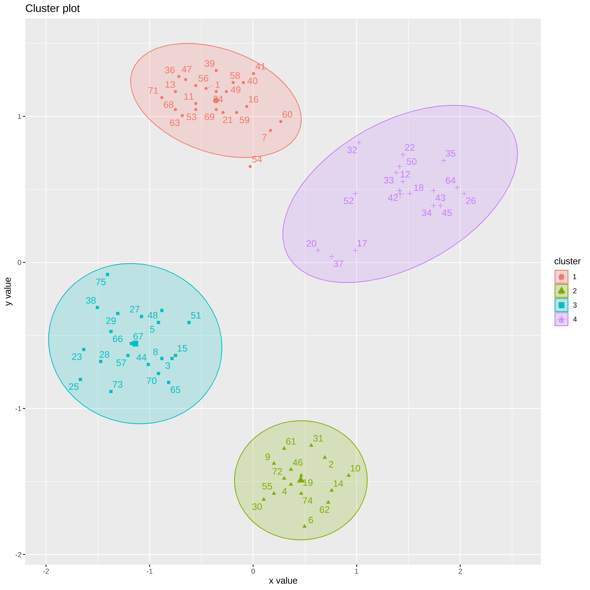

O conjunto de dados Ruspini, que consiste em 75 pontos dividido em quatro grupos, ele é popular para ilustrar técnicas de agrupamento. É um conjunto de dados muito simples com clusters bem separados. O conjunto de dados original tem os pontos ordenados por grupo. Podemos embaralhar os dados (linhas) usando sample_frac.
# A tibble: 75 × 2
x y
<int> <int>
1 44 156
2 54 124
3 47 149
4 99 119
5 28 76
6 4 53
7 101 115
8 32 143
9 108 111
10 33 154
# … with 65 more rows
Explorando os dados
Nesta etapa os dados são avaliados, pois eventualmente temos situações de dados ausentes, pontos afastados.
ggplot(ruspini, aes(x = x, y = y)) +geom_point()
summary(ruspini)
x y
Min. : 4.00 Min. : 4.00
1st Qu.: 31.50 1st Qu.: 56.50
Median : 52.00 Median : 96.00
Mean : 54.88 Mean : 92.03
3rd Qu.: 76.50 3rd Qu.:141.50
Max. :117.00 Max. :156.00
Normalização
Como os algoritmos usam medidas de distância é necessário usarmos a normalização para que os resultados naõ sejam afetados pela escala dos dados.
## Aqui vamos essa função para fazer a normalizaçãoescala_numerica <-function(x) x %>%mutate_if(is.numeric, function(y) as.vector(scale(y)))ruspini_norm <- ruspini %>%escala_numerica()summary(ruspini_norm)
x y
Min. :-1.66806 Min. :-1.80743
1st Qu.:-0.76649 1st Qu.:-0.72946
Median :-0.09442 Median : 0.08158
Mean : 0.00000 Mean : 0.00000
3rd Qu.: 0.70879 3rd Qu.: 1.01582
Max. : 2.03655 Max. : 1.31355
Métodos para obtenção de Clusters
K-médias
O algoritmo do k-médias usa a distância Eucliadiana quadrática. Aqui vamos usar k=4 e vamos rodar o algoritmo 10 vezes
km <-kmeans(ruspini_norm, centers =4, nstart =10)km
# A tibble: 4 × 3
cluster x y
<chr> <dbl> <dbl>
1 1 0.461 -1.49
2 2 -1.14 -0.556
3 3 -0.360 1.11
4 4 1.42 0.469
ggplot(ruspini_clusters, aes(x = x, y = y, color = cluster)) +geom_point() +geom_point(data = centroids, aes(x = x, y = y, color = cluster), shape =3, size =10)
Vamos usar a biblioteca factoextra para visualizarmos os clusters
library(factoextra)
Welcome! Want to learn more? See two factoextra-related books at https://goo.gl/ve3WBa
fviz_cluster(km, data = ruspini_norm, centroids =TRUE, repel =TRUE, ellipse.type ="norm")

k-medoides
Os medoides pertencem ao proprio conjunto de dados. Podemos observar que o resultado é semelhante ao obtido no k-médias, mas o algoritmo é mais lento.
#library(cluster)kmed <-pam(ruspini_norm, k =4)summary(kmed)
O agrupamento hierárquico começa com uma matriz de distância ´dist()´ e tem como padrão method=“Euclidiano”. As matrizes de distância tornam-se muito grandes rapidamente (tamanho e complexidade de tempo é O(n2) onde n é o número se pontos de dados. Só é possível calcular e armazenar a matriz para pequenos conjuntos de dados.
d <-dist(ruspini_norm)
A função hclust() implementa o HCA, ou seja, o cluster hierarquico aglomerativo. Vamos começar usando o método completo.
hc <-hclust(d, method ="complete")
O HCA retorna um dendrograma e não uma definiçaõ de clusters.
plot(hc)
Se usarmos a biblioteca factoextra podemos definir o número de clusters que queremos visualizar.
fviz_dend(hc, k=4)
Warning: The `<scale>` argument of `guides()` cannot be `FALSE`. Use "none" instead as
of ggplot2 3.3.4.
ℹ The deprecated feature was likely used in the factoextra package.
Please report the issue at <https://github.com/kassambara/factoextra/issues>.
Podemos extrair as atraibuições de cluster cortando o dendrograma em 4 partes e adicionando a identidade aos dados.
clusters <-cutree(hc, k =4)cluster_completo <- ruspini_norm %>%add_column(cluster =factor(clusters))cluster_completo